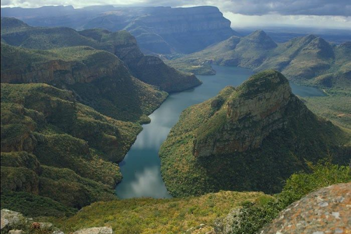
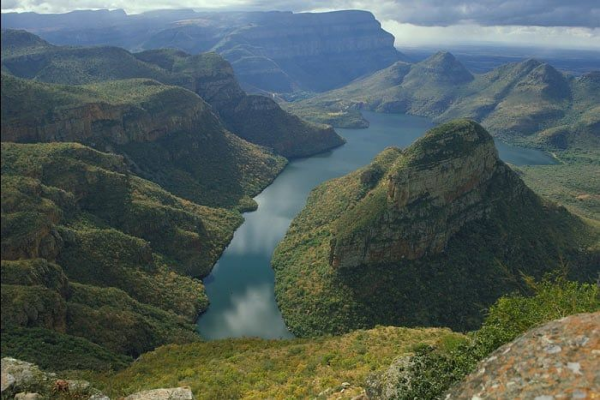

Ce parc offre des opportunités exceptionnelles d'observation des animaux. Les safaris guidés vous emmèneront au cœur de cet écosystème remarquable, où vous vivrez des moments inoubliables.paysage du parc Kruger est tout aussi époustouflant, avec des rivières sinueuses, des collines boisées, des savanes dorées et des points d'eau regorgeant d'animaux en action. Vous pouvez choisir de séjourner dans des camps de brousse authentiques, où vous vous endormirez au son des animaux sauvages, ou dans des lodges offrant un confort exceptionnel.

 

Que vous soyez un amoureux de la nature ou simplement en quête d'aventures, le parc national Kruger en Afrique du Sud est un véritable trésor qui vous plongera au cœur de la majesté de la faune africaine et de la beauté de ses paysages.Venez vivre une expérience inoubliable au sein de cette réserve exceptionnelle et renforcez votre lien avec la nature d'une manière unique.
Pour cette destination, nous ne vous proposerons qu’une seule activité ! La raison est simple, il s’agit d’un safari de 3 jours dans le parc. A travers ce safari, vous découvrirez une partie de ce lieu si vaste, il faudrait en effet plusieurs semaines pour en voir l’intégralité, à cause de sa taille hallucinante (équivalente à la belgique). Vous pourrez cependant apprécier ce qui fait la renommée de l’afrique du sud dans le monde du voyage: La Savane ! Vous observerez de vos propres yeux les girafes, rhinocéros, éléphants, guépards... et bien sur, le roi des animaux : le Lion. Vous pourrez également apprécier les paysages splendides offerts par le parc.
Voici une séléction de solutions d’hébergements pour votre séjour au parc Kruger. Cette sélécion comprends des logements de plusieurs types (Hôtels, lodges...) afin que vous puissiez loger dans un endroit qui vous plaise, peu importe vos préférences personelles.
Singita Lebombo Lodge (Lodges, piscine, terasses)
Londolozi Private Game Reserve (Lodges, Chambres, restaurant)
Protea Hotel Kruger Gate (Hôtel, Terasse, Salon)
De même que pour les hébergements, nous vous proposerons ici plusieurs restaurants locaux, afin que vous puissier manger ce qui vous chante, quels que soient vos goûts !
Skukuza Rest Camp (Plats locaux et internationaux, très fréquenté)
Pretoriuskop Rest Camp (Cuisine locale)
Berg-en-Dal Rest Camp (spécialisé dans les petits plats)
Olifants Rest Camp (Vue impressionnante sur la parc)
Vous pourrez prendre un bus entre l’aérport de Johannesbourg et le Parc Kruger, afin de vous y rendre.
| Moyen de Transport | Distance | Durée du trajet | Escale(s) |
Prix | Emission Carbone |
|---|---|---|---|---|---|
| Avion |
11 609km |
11h10 |
Non | 510€ |
775kg |